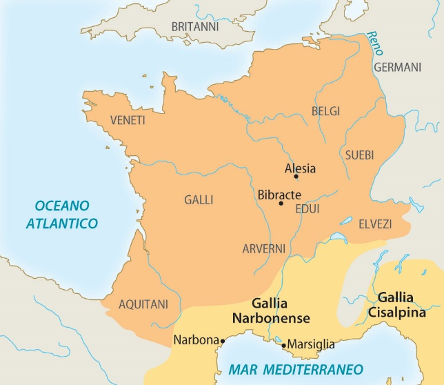
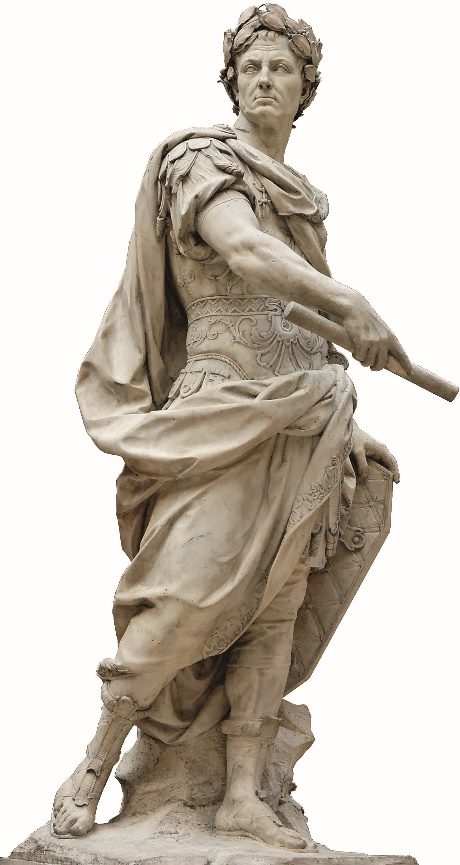
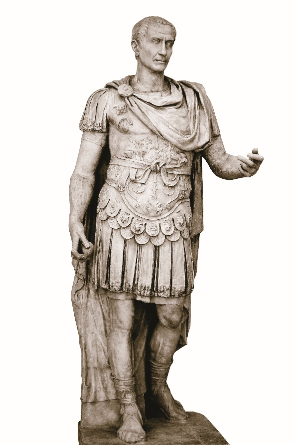

Dal 60 al 44 avanti Cristo: un uomo che diventa padrone di Roma
Caio Giulio Cesare era un giovane capo dei popolari, il gruppo che difendeva la plebe.
In 16 anni passa da politico debole a padrone di Roma. Poi viene ucciso.
La sua storia ha 5 tappe: l'alleanza, la Gallia, la guerra civile, il potere, la morte.
Nel 60 a.C. tre uomini potenti fanno un patto segreto: Cesare, Pompeo e Crasso.
| Chi | Cosa porta | Cosa ottiene |
|---|---|---|
| Cesare | i voti della plebe | diventa console |
| Pompeo | l'esercito | le terre per i suoi soldati |
| Crasso | i cavalieri (i ricchi) | leggi per i cavalieri e un esercito in Oriente |
Cicerone prova a fermarli, ma viene mandato in esilio.
Nel 60 Cesare è il più debole dei tre: non ha vittorie e non ha un esercito fedele. Per questo chiede di governare la Gallia, dove può fare la guerra.

Intanto Crasso muore in Oriente, combattendo contro i Parti.

Pompeo ha paura di Cesare e si mette d'accordo con il Senato: Cesare non può più diventare console.
Allora Cesare attraversa con l'esercito il fiume Rubicone, il confine dell'Italia. È vietato: comincia la seconda guerra civile.

Cesare non si fa re. Prende invece tutte le cariche della repubblica, così comanda lui:
Cosa fa:
Alcuni senatori hanno paura: Cesare ha troppo potere, forse vuole diventare re.
Bruto e Cassio Longino organizzano una congiura. Cicerone lo sa, ma non partecipa.
GIULIO CESARE
|
60 a.C. TRIUMVIRATO Cesare + Pompeo + Crasso
|
58-52 GALLIA Vercingetorige, Alesia
|
49-45 RUBICONE guerra contro Pompeo
Farsalo · Cleopatra
|
dopo il 45 DITTATORE a vita, 900 senatori
|
44 a.C. IDI DI MARZO Bruto e Cassio
1. Chi formava il primo triumvirato?
2. Quale terra conquistò Cesare?
3. Che cosa successe quando Cesare attraversò il Rubicone?
4. Dove Cesare sconfisse Pompeo?
5. Quando e come morì Cesare?